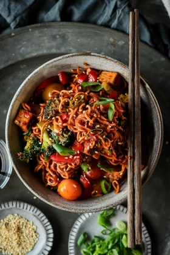

Spicy Garlic Wok Noodles

Description
This is a new and improved update on our favourite spicy garlic wok noodles!
It's loaded with veggies, and is an ultra-flexible recipe. Change up the veggies based on what you have in the
fridge - green beans, cabbage, carrots, mushrooms, or bean sprouts - they all work great!
Ingredients
Seasoned tofu
- 1 Tbsp (15 mL) vegetable oil
- 11 oz (325 g) firm tofu, pressed, cut into 1 cm cubes
- 1 Tbsp (15 mL) ketjap manis†
Stir fry
- ½ Tbsp (7 mL) vegetable oil
- 3 medium shallots, minced
- 5 cloves garlic, minced
- 1 small broccoli, cut into bite-sized florets
- 6.5 oz (185 g) quick-cooking ramen noodles
- 1 red bell pepper, minced
- 1 cup (149 g) cherry tomatoes
- 2 Tbsp (30 mL) dark soy sauce
- 2 Tbsp (30 mL) sambal oelek, or less for less spice
- 1 tsp (5 mL) toasted sesame oil
Optional garnish
- sliced green onion
- toasted sesame seeds
Steps
- To a non-stick large pan on high heat, add the oil. When hot, add the tofu. Stir every few minutes, but be
careful not to over-stir as the tofu can crumble. When lightly golden on all sides, add the ketjap, toss to
coat, and remove from the heat.
- To a sauté pan or wok on medium-high heat, add the sesame oil, shallots, garlic, and broccoli and cook for 6
minutes.
- Cook the noodles according to the package instructions. Ideally, drain when the noodles are 2 minutes away
from being al dente. Run the noodles under cold water.
- Add the drained noodles to the pan with the broccoli. Also add in the tofu, bell pepper, tomatoes, soy
sauce, sambal, and sesame oil. Toss to coat, and heat until the noodles are fully cooked.
- Serve in your favourite bowls, top with desired garnish, and enjoy!
All recipes and pictures are from Pick Up Limes site.